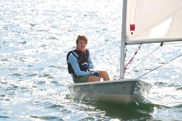

Heading
Early Life
I grew up and lived for all of my life in Hingham, Massachussetts. I began sailing at the earliest age that I could have and this began my love for a sport that I continue to partake in throughout today. I started going to elementary school in a school system that prioritized studies a lot and this has continued to have a profound affect on how I think about in school to this day. I continued to sail through all of my summers occasionally changing location. When i got into high shool, I discovered my love for computers which helped influence my choice of school and major.
Work career
At the start of middle school I helped my brother and my cousin work a Bailing Buisness where we stayed over the summer. Over the years they stopped doing this until it was just me who continued it on for one final year before my family began sailing at a new place closer to home. For 2 years I worked as a Junior Sailing Instructor at the yacht club that my family became members of. After those years I became a Senior Sailing Instructor at a non-profit and taught sailing for the next two summers until college.
Sailing career
I began sailing at the first age in which my parents could enrole me into a sailing program which was at 8 years old. I first sailed in small box shaped boats called optimists, I would sail at this first yacht club for two years before going to the cape and sailing at the yacht club my father sailed at. I would sail at this yacht club for the next 5 years where I would begin to sail in a bigger boat called a 420. I would finally start sailing back at where I lived in hingham for the next two years before stopping taking sailing lessons and begin to give the sailing lessons